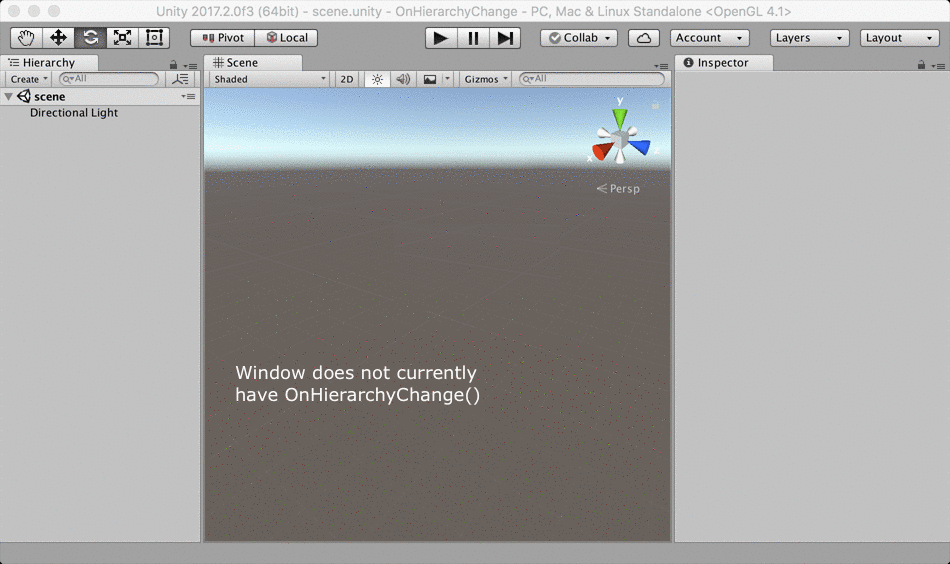

EditorWindow.OnHierarchyChange()
Description 描述
Handler for message that is sent when an object or group of objects in the hierarchy changes.
Actions that trigger this message include creating, renaming, reparenting, or destroying objects in the current hierarchy, as well as loading, unloading, renaming, or reordering loaded Scenes. Note that the message is not sent immediately in response to these actions, but rather during the next update of the editor application.
Actions taken with objects that have HideFlags.HideInHierarchy set will not cause this message to be sent, but changing Object.hideFlags will.
The OnHierarchyChange() is added to the Unity editor. Once installed
objects are watches in the Scene and inspector. Adding a new GameObject
into the Scene, or changing the position of a GameObject in the Inspector will be
observed by OnHierarchyChange().
Similarly changes to the rotation and scale will be seen.

An animation showing how the OnHierarchyChange can be used.
See Also: EditorApplication.hierarchyChange
The following example script created an EditorWindow that monitors the number of objects and updates whenever the hierarchy changes. Copy it into a file called HierarchyMonitorWindow.cs and put it in a folder called Editor.
using System.Linq; using UnityEditor; using UnityEngine;
class HierarchyMonitorWindow : EditorWindow { [MenuItem("Window/Hierarchy Monitor")] static void CreateWindow() { EditorWindow.GetWindow<HierarchyMonitorWindow>(); }
[SerializeField] int m_NumberVisible;
void OnEnable() { titleContent.text = "Hierarchy Monitor"; // manually call the event handler when the window is first loaded so its contents are up-to-date OnHierarchyChange(); }
void OnHierarchyChange() { var all = Resources.FindObjectsOfTypeAll(typeof(GameObject)); m_NumberVisible = all.Where(obj => (obj.hideFlags & HideFlags.HideInHierarchy) != HideFlags.HideInHierarchy).Count(); }
void OnGUI() { EditorGUILayout.LabelField( string.Format("There are currently {0} GameObjects visible in the hierarchy.", m_NumberVisible) ); } }
Another simple example.
// OnHierarchyChange // // Watch Hierarchy and Inspector access. When GameObjects are changed, or new ones // added or deleted this example will be called.
using UnityEngine; using UnityEditor;
public class ExampleClass : EditorWindow { static int count = 0;
[MenuItem("Example/OnHierarchyChange Example")] static void Init() { ExampleClass window = (ExampleClass)GetWindow(typeof(ExampleClass)); window.Show(); }
void OnHierarchyChange() { count += 1; this.Repaint(); }
void OnGUI() { GUI.Label(new Rect(5, 5, 205, 35), "OnHierarchyChange: " + count.ToString()); } }